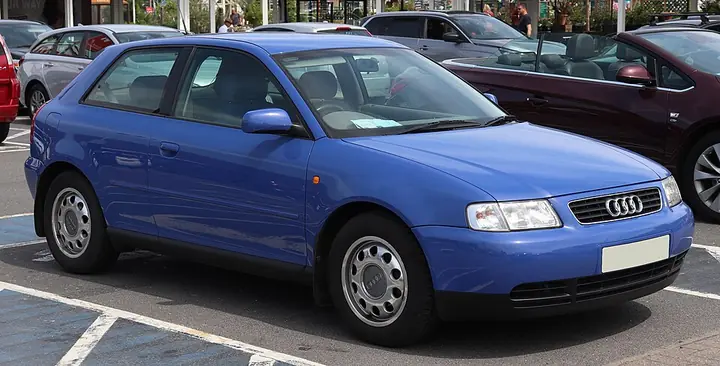
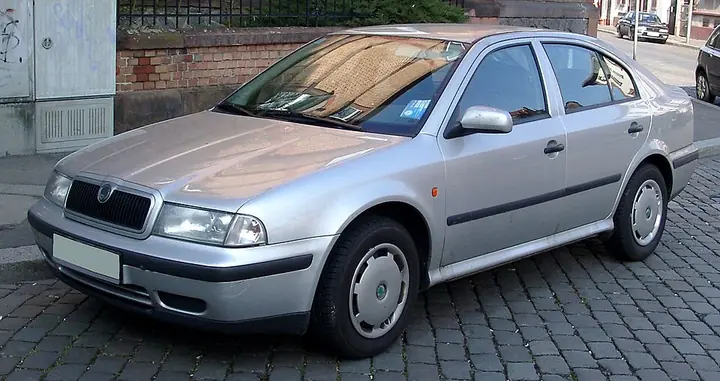
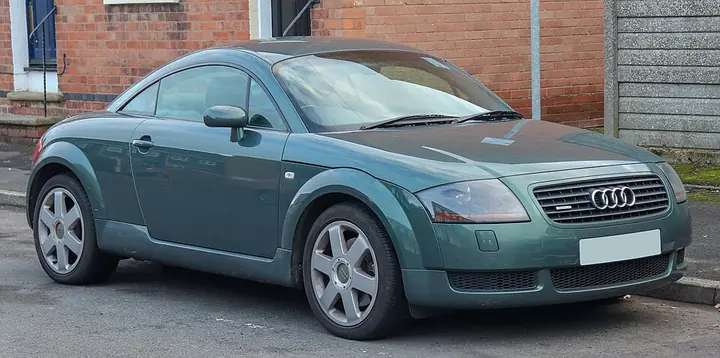
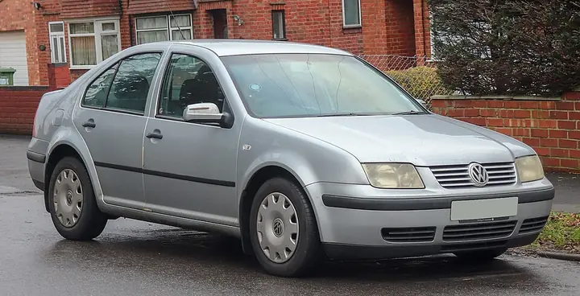
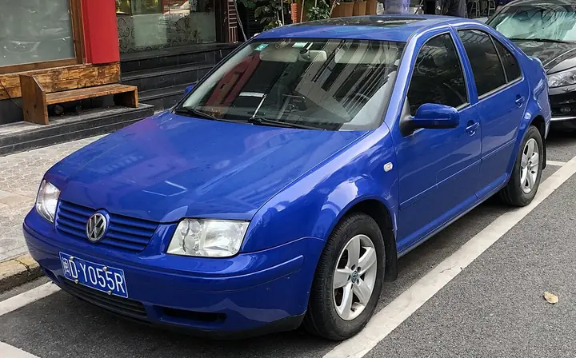
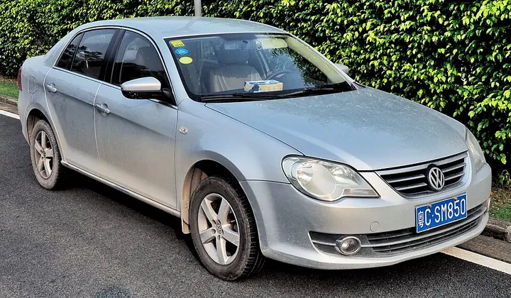
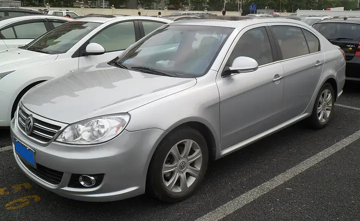
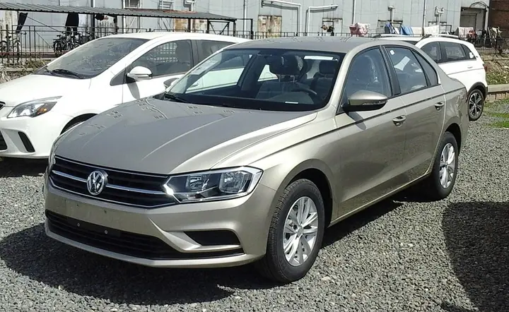

Platform
Volkswagen Group A4 (PQ34)
15 generations of 11 models by Audi, Škoda, Volkswagen and SEAT, 1996–2023.
The cars

Audi A3 · First generation (Typ 8L; 1996)
Škoda Octavia · First generation (Typ 1U; 1996) Volkswagen Golf · Fourth generation (Mk4/A4, Typ 1J; 1997)
Volkswagen Golf · Fourth generation (Mk4/A4, Typ 1J; 1997) Volkswagen Golf Mk4
Volkswagen Golf Mk4 Volkswagen New Beetle
Volkswagen New Beetle
Audi TT · TT Mk1 (Type 8N, 1998–2006)- SEAT Toledo · Second generation (Typ 1M; 1998)
- SEAT León · First generation (1M; 1999)

Volkswagen Bora · Volkswagen Bora (1999–2015) Volkswagen Jetta · Fourth generation (A4, Typ 1J; 1999)
Volkswagen Jetta · Fourth generation (A4, Typ 1J; 1999)
Volkswagen Bora · First generation (1J; 2001)
Volkswagen Bora · Second generation (2008)
Volkswagen Lavida · First generation (Typ 18; 2008)- Volkswagen Lavida · Second generation (Typ 18; 2012)

Volkswagen Bora · Third generation (2016)